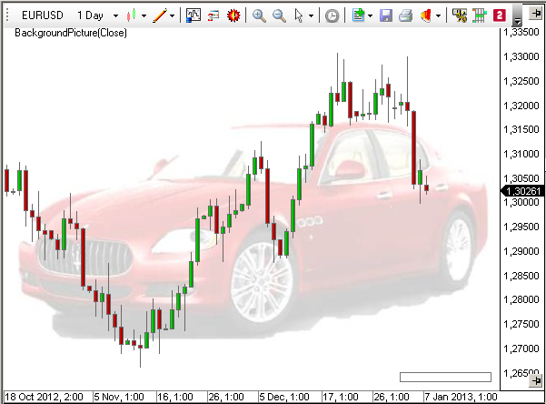

Tipps und Tricks
Hinweis: Code Änderungen in selbst-erstellten Indikatoren werden automatisch auf Conditions angewandt, welche den Indikator verwenden sofern diese im "body" von z.B. "OnCalculate/OnBarUpdate" durchgeführt wurden. Änderungen von Parametern, Output Serien, etc. benötigen eine manuelle Änderung der Conditions.
Bar Nummerierung im Chart
Das Beispiel zeigt die Verwendung der Plot-Methode und der Eigenschaften des Chart Objekts.

Hinweis: Hinweis: Zu Demonstrationszwecken wird innerhalb des Teils "Bar-Nummerierung" für jeden Aufruf von Paint jeweils einige male new und Dispose aufgerufen. Aus Performance-Sicht ist die Lösung im Teil "Eigenschaften von ChartControl" mit einer festen Variablendeklaration und den Aufrufen von Dispose in OnTermination wesentlich besser.
using System;
using System.Collections.Generic;
using System.ComponentModel;
using System.Drawing;
using System.Drawing.Drawing2D;
using System.Linq;
using System.Xml;
using System.Xml.Serialization;
using AgenaTrader.API;
using AgenaTrader.Custom;
using AgenaTrader.Plugins;
using AgenaTrader.Helper;
namespace AgenaTrader.UserCode
{
[Description("PlotSample")]
public class PlotSample : UserIndicator
{
Pen pen = new Pen(Color.Blue);
StringFormat sf = new StringFormat();
SolidBrush brush = new SolidBrush(Color.Black);
Font font = new Font("Arial", 10, FontStyle.Bold);
protected override void OnInit()
{
IsOverlay = true;
}
protected override void OnDispose()
{
if (pen!=null) pen.Dispose();
if (sf!=null) sf.Dispose();
if (brush!=null) brush.Dispose();
if (font!=null) font.Dispose();
}
protected override void OnCalculate()
{}
public override void OnPaint(Graphics g, Rectangle r, double min, double max)
{
if (Bars == null || Chart == null) return;
// Eigenschaften von Chart
string s;
s = "bounds: "+r.X.ToString()+" "+r.Y.ToString()+" "+r.Height.ToString()+" "+r.Width.ToString();
g.DrawString(s, font, brush, 10, 50, sf);
s = "min: "+Instrument.Round2TickSize(min).ToString()+" max: "+Instrument.Round2TickSize(max).ToString();
g.DrawString(s, font, brush, 10, 70, sf);
s = "BarSpace: "+Chart.BarSpace.ToString()+" BarWidth: "+Chart.BarWidth.ToString();
g.DrawString(s, font, brush, 10, 90, sf);
s = "Bars.Count: "+Bars.Count.ToString();
g.DrawString(s, font, brush, 10, 110, sf);
s = "BarsPainted: "+Chart.BarsPainted.ToString() + " FirstBarPainted: "+Chart.FirstBarPainted.ToString() + " LastBarPainted: "+Chart.LastBarPainted.ToString();
g.DrawString(s, font, brush, 10, 130, sf);
s = "BarsVisible: "+Chart.BarsVisible.ToString() + " FirstBarVisible: "+Chart.FirstBarVisible.ToString() + " LastBarVisible: "+Chart.LastBarVisible.ToString();
g.DrawString(s, font, brush, 10, 150, sf);
// Bar Nummerierung
StringFormat _sf = new StringFormat();
SolidBrush _brush = new SolidBrush(Color.Blue);
Font _font = new Font("Arial", 8);
SizeF _stringSize = new SizeF();
_sf.Alignment = StringAlignment.Center;
for (int i=Chart.FirstBarVisible; i<=Chart.LastBarVisible; i++)
{
string text = i.ToString();
_stringSize = g.MeasureString(text, _font);
int x = Chart.GetXByBarIdx(Bars, i);
int y = Chart.GetYByValue(this, High[Abs2Ago(i)] + 3*TickSize) - (int) _stringSize.Height;
g.DrawString(text, _font, _brush, x, y, _sf);
}
_sf.Dispose();
_brush.Dispose();
_font.Dispose();
}
private int Abs2Ago(int idx)
{
return Math.Max(0,Bars.Count-idx-1-(CalculateOnClosedBar?1:0));
}
}
}
Eigenes Chart-Hintergrundbild
Durch die Plot-Methode ist es sehr leicht möglich, dem Chart ein eigenes Hintergrundbild hinzuzufügen.
Das folgende Beispiel verwendet ein Bild im JPG-Format im Hauptverzeichnis auf der Festplatte (C:).
using System;
using System.Drawing;
using AgenaTrader.Custom;
using AgenaTrader.Plugins;
namespace AgenaTrader.UserCode
{
public class BackgroundPicture : UserIndicator
{
Image img;
protected override void OnStart()
{
try { img = Image.FromFile("C:\\\\MyCar.jpg"); } catch {}
}
public override void OnPaint(Graphics g, Rectangle r, double min, double max)
{
if (Chart == null || img == null) return;
g.DrawImage(img,r);
}
}
}

File-Auswahl in den Properties
Um in den Properties (Eigenschaften) eines Indikators eine File-Auswahl zu ermöglichen, benötigt man einen Typ-Converter.
Das folgende Beispiel zeigt, wie eine Auswahl von WAV-Dateien für einen Alarm programmiert werden kann:
using System;
using System.IO;
using System.Collections;
using System.ComponentModel;
using AgenaTrader.Custom;
using AgenaTrader.Plugins;
namespace AgenaTrader.UserCode
{
[Description("File Picker Example.")]
public class FilePicker : UserIndicator
{
private string _soundFile = "Alert4.wav";
private static string _dir = Environment.GetFolderPath(Environment.SpecialFolder.MyDocuments) + @"\\AgenaTrader\\Sounds\\";
internal class MyConverter : TypeConverter
{
public override bool GetStandardValuesSupported(ITypeDescriptorContext context)
{
return true;
}
public override StandardValuesCollection GetStandardValues(ITypeDescriptorContext context)
{
if (context == null) return null;
ArrayList list = new ArrayList();
DirectoryInfo dir = new DirectoryInfo(_dir);
FileInfo[] files = dir.GetFiles("*.wav");
foreach (FileInfo file in files) list.Add(file.Name);
return new TypeConverter.StandardValuesCollection(list);
}
}
protected override void OnStart()
{
PlaySound(_soundFile);
}
[Description("Choose file to play.")]
[Category ("Sound")]
[TypeConverter(typeof(MyConverter))]
public string SoundFile
{
get { return _soundFile; }
set { _soundFile = value; }
}
}
}
Formatieren von Zahlen
Formatieren von Zahlen
Generelles zur Formatierung in C#
double d = 123.4567890;
Print("Ohne Formatierung : " + d.ToString()); // 123.456789
Print("als Währung : " + d.ToString("C")); // 123.46 €
Print("Exponential : " + d.ToString("E")); // 1.234568E+002
Print("als Festkommazahl : " + d.ToString("F2")); // 123.46
Print("Generell : " + d.ToString("G")); // 123.456789
Print("als Prozentzahl : " + d.ToString("P0")); // 12.346%
Print("Tmit 2 Nachkommastellen : " + d.ToString("N2")); // 123.45
Print("mit 3 Nachkommastellen : " + d.ToString("N3")); // 123.457
Print("mit 4 Nachkommastellen : " + d.ToString("N4")); // 123.4568
Nützliche Funktionen
Liefert das Währungssymbol des aktuellen Instruments:
public string getWaehrungssymbol() {
string s = "";
switch (Instrument.Currency) {
case Currencies.USD : s = "$"; break;
case Currencies.EUR : s = "€"; break;
case Currencies.CHF : s = "CHF"; break;
case Currencies.GBP : s = ((char)163).ToString(); break;
case Currencies.JPY : s = ((char)165).ToString(); break;
}
return s;
}
Wandelt eine Zahl in eine Währung mit Tausendertrennung und 2 Nachkommastellen um Das Tausendertrennzeichen ist abhängig von eingestellter "Culture".
public string getWaehrungOhneSymbol(double d) {
// Tausender Trennzeichen (abh. von eingestellter Culture) und 2 Nachkommastellen
return d.ToString("\#,\#\#0.00");
}
Wandelt eine Zahl in eine Währung mit Tausendertrennung, 2 Nachkommastellen und einem Währungssymbol um.
public string getWaehrungMitSymbol(double d) {
// Dollar wird vorangestellt. Alles andere kommt hintendran
string s=getWaehrungOhneSymbol(d);
string w=getWaehrungssymbol();
if (w=="$") s=w+" "+s; else s+=" "+w;
return s;
}
Wandelt eine Zahl in eine Währung mit Tausendertrennung, 2 Nachkommastellen und einem Währungssymbol um und füllt bis zu einer festen Länge mit führenden Leerzeichen auf. Diese Funktion ist sehr gut für eine tabellarische Ausgabe geeignet.
public string getWaehrungMitSymbol(double d, int Laenge) {
// fuehrende Leerzeichen bis feste Laenge erreicht ist
string s=getWaehrungMitSymbol(d);
for (int i=s.Length; i<Laenge; i++) s=" "+s;
return s;
}
Wandelt eine Zahl in eine Prozentangabe um. Es wird nicht gerechnet, nur formatiert. Führendes Pluszeichen, eine Nachkommastelle und Prozentzeichen
public string getPercent(double d) {
d=Math.Round(d, 1);
string s=(d>0)?"+":""; // Leading plus sign
return s+d.ToString("0.0")+"%";
}
Formatiert einen Kurswert in Abhängigkeit von der Anzahl der Nachkommastellen, in der der Wert notiert wird. Mit Tausendertrennzeichen und fester Länge, d.h. es wird auch rechts ggf. mit Nullen aufgefüllt. Wegen der Verwendung von CultureInfo muß der NameSpace System.Globalization eingebunden sein.
public string format(double d)
{
int tickLength = 0;
// ticksize.ToString() ist z.B. bei 6J = "1E-06" und Length ist dann 5
// und nicht richtigerweise 8 wie bei "0,000001")
if (TickSize < 1) tickLength = TickSize.ToString("0.\#\#\#\#\#\#\#\#\#\#\#").Length - 2;
string f = "{0:n"+tickLength.ToString()+"}";
return string.Format(CultureInfo.CurrentCulture, f, d);
}
Beispiele
double profit = 1234.567890;
Print("getCurrencyWithoutSymbol ": + getWaehrungOhneSymbol(Gewinn)); // 1234.57
Print("getCurrencyWithSymbol :" + getWaehrungMitSymbol(Gewinn)); // $ 1,234.57
Print("getCurrencyWithSymbol :" + getWaehrungMitSymbol(Gewinn)); // $ 1,234.57
double percentage profit = 12.3456789;
Print("getPercent :" + getPercent(ProzGewinn)); // +12.3%
double price = 123.4567;
Print("getPrice :" + getKurs(Kurs)); // 123.46
Index-Convertierung
Es gibt 2 Arten der Indizierung in AgenaTrader.
-
Die Bars werden vom jüngsten zum ältesten Bar nummeriert. Diese Art wird in der OnBarUpdate()-Methode verwenden. Der jeweils letzte Bar bekommt den Index 0, der älteste hat den Index Bars.Count-1.
-
Die Bars werden vom ältesten zum jüngsten Bar nummeriert. Diese Art wird häufig in der OnPaint()-Methode in for-Schleifen verwendet. Der älteste Bar bekommt den Index 0, der jüngste Bar hat den Index Bars.Count-1.
Die folgende Funktion kann zur Umrechnung der Index-Arten verwendet werden:
private int Convert(int idx)
{
return Math.Max(0,Bars.Count-idx-1-(CalculateOnClosedBar?1:0));
}
Indikatornamen überschreiben
Der Namen des Indikators (bzw. einer Strategie), der im Eigenschaftendialog und am oberen Rand des Charts angezeigt wird. Verwenden Sie die ToString() Methode und die Eigenschaft DisplayName, um sie zu überschreiben.
public override string ToString()
{
return "My Name";
}
public override string DisplayName
{
get
{
return "My Name";
}
}
Hinweis: Verwenden Sie immer beide Methoden in Ihren Skripts, um sicherzustellen, dass Ihr spezieller Name auf allen AgenaTrader-Formularen verwendet wird.
Rechteck mit abgerundeten Ecken
Durch die Verwendung der Graphics Methoden können sehr interessante Formen in einen Chart gezeichnet werden. Ein Beispiel hierfür ist die Klasse RoundedRectangle, die Rechtecke mit abgerundeten Ecken zeichnet. Das Ergebnis sieht sehr viel "moderner" aus, als ein klassisches Rectangle.

Example Code:
using System;
using System.Collections.Generic;
using System.ComponentModel;
using System.Drawing;
using System.Linq;
using System.Xml;
using System.Xml.Serialization;
using System.Drawing.Drawing2D;
using AgenaTrader.API;
using AgenaTrader.Custom;
using AgenaTrader.Plugins;
namespace AgenaTrader.UserCode
{
[Description("Demo of RoundedRectangles")]
public class DemoRoundedRectangle : UserIndicator
{
protected override void OnInit()
{
IsOverlay = true;
}
protected override void OnCalculate() {}
public override void OnPaint(Graphics g, Rectangle r, double min, double max)
{
GraphicsPath path;
// zeichnet ein Rechteck mit abgerundeten Ecken
path = RoundedRectangle.Create(30, 50, 100, 100,8);
g.DrawPath(Pens.Black, path);
// zeichnet ein ausgefülltes Rechteck mit Radius 20
// abgerundet sind nur die linke obere und rechte untere Ecke
path = RoundedRectangle.Create(160, 50, 100, 100, 20,
RoundedRectangle.RectangleCorners.TopLeft|RoundedRectangle.RectangleCorners.BottomRight);
g.FillPath(Brushes.Orange, path);
}
}
public abstract class RoundedRectangle
{
public enum RectangleCorners
{
None = 0, TopLeft = 1, TopRight = 2, BottomLeft = 4, BottomRight = 8,
All = TopLeft | TopRight | BottomLeft | BottomRight
}
public static GraphicsPath Create(int x, int y, int width, int height, int radius, RectangleCorners corners)
{
Rectangle r = new Rectangle(x,y,width, height);
Rectangle tlc = new Rectangle(r.Left, r.Top,Math.Min(2 * radius, r.Width),Math.Min(2 * radius, r.Height));
Rectangle trc = tlc;
trc.X = r.Right - 2 * radius;
Rectangle blc = tlc;
blc.Y = r.Bottom - 2 * radius;
Rectangle brc = blc;
brc.X = r.Right - 2 * radius;
Point[] n = new Point[]
{
new Point(tlc.Left, tlc.Bottom), tlc.Location,
new Point(tlc.Right, tlc.Top), trc.Location,
new Point(trc.Right, trc.Top),
new Point(trc.Right, trc.Bottom),
new Point(brc.Right, brc.Top),
new Point(brc.Right, brc.Bottom),
new Point(brc.Left, brc.Bottom),
new Point(blc.Right, blc.Bottom),
new Point(blc.Left, blc.Bottom), blc.Location
};
GraphicsPath p = new GraphicsPath();
p.StartFigure();
//Top left corner
if ((RectangleCorners.TopLeft & corners) == RectangleCorners.TopLeft)
p.AddArc(tlc, 180, 90);
else
p.AddLines(new Point[] { n[0], n[1], n[2] });
//Top edge
p.AddLine(n[2], n[3]);
//Top right corner
if ((RectangleCorners.TopRight & corners) == RectangleCorners.TopRight)
p.AddArc(trc, 270, 90);
else
p.AddLines(new Point[] { n[3], n[4], n[5] });
//Right edge
p.AddLine(n[5], n[6]);
//Bottom right corner
if ((RectangleCorners.BottomRight & corners) == RectangleCorners.BottomRight)
p.AddArc(brc, 0, 90);
else
p.AddLines(new Point[] { n[6], n[7], n[8] });
//Bottom edge
p.AddLine(n[8], n[9]);
//Bottom left corner
if ((RectangleCorners.BottomLeft & corners) == RectangleCorners.BottomLeft)
p.AddArc(blc, 90, 90);
else
p.AddLines(new Point[] { n[9], n[10], n[11] });
//Left edge
p.AddLine(n[11], n[0]);
p.CloseFigure();
return p;
}
public static GraphicsPath Create(Rectangle rect, int radius, RectangleCorners c)
{ return Create(rect.X, rect.Y, rect.Width, rect.Height, Math.Max(1,radius), c); }
public static GraphicsPath Create(int x, int y, int width, int height, int radius)
{ return Create(x, y, width, height, Math.Max(1,radius), RectangleCorners.All); }
public static GraphicsPath Create(Rectangle rect, int radius)
{ return Create(rect.X, rect.Y, rect.Width, rect.Height, Math.Max(1,radius)); }
public static GraphicsPath Create(int x, int y, int width, int height)
{ return Create(x, y, width, height, 8); }
public static GraphicsPath Create(Rectangle rect)
{ return Create(rect.X, rect.Y, rect.Width, rect.Height); }
}
}